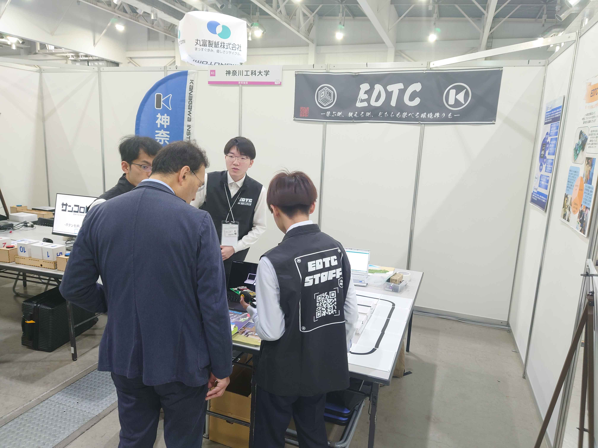
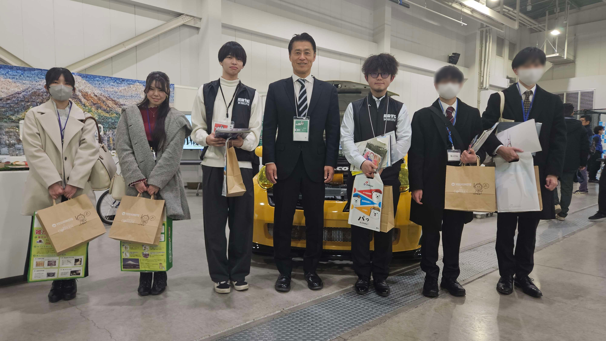

2月に富士市で行われた「ものづくり交流フェア」にKAIT-EDTCとして参加させていただきました！
当日は弊団体で提供させていただいているライントレーサーと相撲ロボット、ぶるぶるくんを展示し、沢山の来場者の方に体験してもらいました。
その中で他のブースの企業の方々にものづくりにおける貴重な見解をいただき、名刺まで交換までさせていただきました。

企業の方々と話していく中で弊団体の活動内容、活動への取り組み方を説明することが多かったのですが、自身が所属する部署は説明できる一方で
他部署については曖昧な回答しか出来ないなど、今後の活動における課題が見つかりました。
ブースの見学時では、高校生とアプリの共同開発をしているJATCO株式会社様のブースが一番印象に残っています。
昨今はプログラミングが流行りを見せ小学生でもものづくりに触れられるような時代になってきましたが、
しかし一方で発展する情報社会において何かを「作る」というハードルは上がり続けています。
その中で企業さんが協力してくれるというのは非常に刺激的で心強いものです。
私からは、JATCO株式会社様のような取り組みは「若者に未来を託す」というような意思を感じられ非常に感銘を受けました。
KAIT-EDTCの活動においてもハードウェアを触る機会が少なくなっている子供たちに楽しく、そして意味を持って取り組んでもらえるように
私たち自身も学びながら頑張っていきたいと思います。
今回の経験を通して、新たな縁談であったり、スキルアップのきっかけにも気づかされた良い経験になりました！

ブース見学の最後には細野豪志さんと写真を取らせていただきました！